PICマイクロプロセッサ用 ファームウエア書き換え基板
RCDプログラマの製作
Home > Software > ソフトウエア開発・サーバ管理のメモ帳 > このページ
Created on 2005/03/07, Last Update 2012/01/27
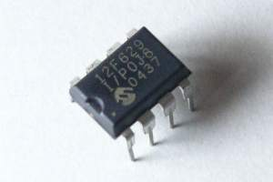
i486もZ80も良いですが、安価なPICにも手を伸ばして見ることにしました...
所要時間：情報収集1日、RCDライタ製作1時間、LEDテスト基板製作5分、LEDテストプログラム製作1時間。
日曜日に初めてPICマイコンを購入し、部品類を集め基板を作り、今日（月曜日）このページを書いてます...
市販されているフラッシュROM書き込み装置は...
2005年現在の情報...オフィシャルなプログラマ （メーカー製で確実）
■ シリアル（RS-232C）接続
マイクロチップ・テクノロジー PICSTART Plus
（純正品、完成品 30,000円）
秋月電子
ＡＫＩ－ＰＩＣプログラマー （組み立てキット。部品のみ販売 6,700円）
■ パラレル（セントロニクス）接続
シリコンハウス共立
SK-PICW （完成品 5,040円）
簡易プログラマ （個人的に作っているので、ＰＩＣ型番により動かない場合もあるらしい）
■シリアル（RS-232C）接続
JDMライタ （JDM氏） → 日本語訳および改良 （jr3roc氏）
RCDライタ （feng3氏） ／ 過電流保護付きRCDライタ （feng3氏）
■ パラレル接続
AN589ライタ
（マイクロチップ・テクノロジーの技術資料） → 日本語訳
（電子工作の実験室）
PICer ユーザーズ・マニュアル
（Einstein氏）
いずれも１０００円程度の材料で出来るそうです。
RCDライタを製作してみた
安価な小型 PIC 12F629 を使うために、RCDライタを作ってみました。確かに、部品を全部揃えても500円程度です。
（在庫を使った部品もあるため、値段は参考価格）
| 名称 | 型番・スペック | 参考価格 |
|---|---|---|
| 炭素皮膜抵抗 | 0.2k, 1/4W | 1 個 （@5 円） |
| 炭素皮膜抵抗 | 1k, 1/4W | 1 個 （@5 円） |
| 炭素皮膜抵抗 | 1.5k, 1/4W | 2 個 （@5 円×2） |
| 炭素皮膜抵抗 | 10k, 1/4W | 1 個 （@5 円） |
| 可変抵抗 | 10k, B特性 | 1 個 （@40 円） |
| ツェナー・ダイオード | 13V, 1/2W | 1 個 （@15 円） |
| ツェナー・ダイオード | 5.1V, 1/2W | 1 個 （@15 円） |
| 汎用整流ダイオード | (1S1588同等品) 1S2076A | 5 個 （@15 円×5） |
| LED(発光ダイオード) | 2V, 20mA | 1 個 （@25 円） |
| アルミ電解コンデンサ | 470uF, 16V | 1 個 （@30 円） |
| 積層セラミック・コンデンサ | 0.1uF, 50V | 1 個 （@20 円） |
| ICソケット | DIP 18pin用 | 1 個 （@50 円） |
| シリアルポート用ソケット | EIA-574 メス | 1 個 （@150 円） |
| ユニバーサル基板 | 1 枚 （@85 円） | |
| 合計金額 530円 |
feng3氏のホームページより、過電流対策済みの回路図を参照して製作 （10kの可変抵抗は、7.5kで利用しました）
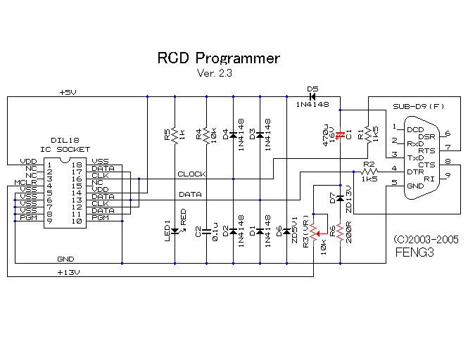
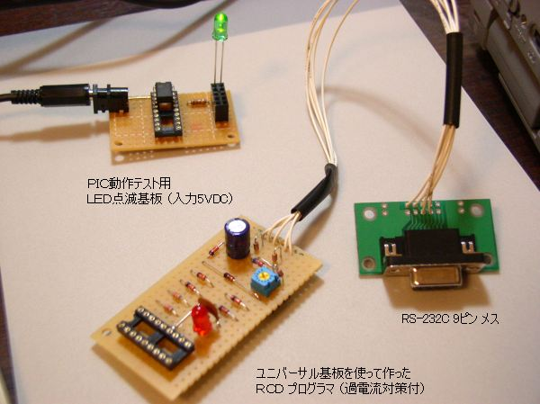
実装配置図も何も書かずに、左端の部品から適当にくっつけていったため、えらく間延びした基板になってしまいました。RCDプログラマ考案者のfeng3氏は、プリント基板を使ってもっとコンパクトにまとめておられます。これからRCDプログラマを作る人は、この写真のような『不恰好な』基板は作らないで欲しいという願いが込められています。
テスト用ＬＥＤ点滅基板
PICの動作確認のため、テスト用基板を作ってみました。
| 名称 | 型番・スペック | 参考価格 |
|---|---|---|
| PICマイコン | PIC 12F629 | 1 個 （@160 円） |
| ICソケット | DIP 18pin用 | 1 個 （@50 円） |
| 炭素皮膜抵抗 | 150, 1/4W | 1 個 （@5 円） |
| LED(発光ダイオード) | 2V, 20mA | 1 個 （@25 円） |
| 合計金額 240円 |
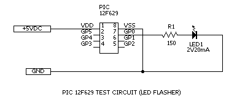
この回路を作動させるためのプログラムは、ここ（12f629-led.asm） からダウンロードできます。
開発環境の入手
アセンブラは、マイクロチップ・テクノロジーが無料で配布しています。
『 MPLAB IDE 』という統合開発環境です。（アセンブラもこの中に入っています）
日本のサイト （アメリカのMPLAB
IDEへのリンクがあります）
アメリカのサイト（Development
Tools Main Page）
使い方は、マイクロソフトのVisual Studioとほとんど同一です。プロジェクトを作成し、ASMファイルを取り込んで、コンパイルすればHEXファイルが完成します。
フラッシュ・プログラムの入手
IC-Prog（フリー・ソフトウエア）を利用して、PICへのプログラムの書き込み、PICからの読み込みが出来ます。
日本語化するパッチは
IC-Progの日本語化パッチ （ROC氏）（2010年現在リンク切れ）
プログラムの書き込み
IC-Progの初期設定
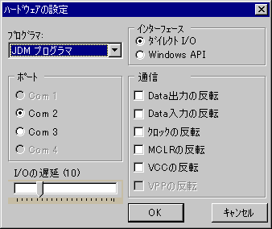
プログラマ ＝ JDM プログラマ
インターフェース ＝ ダイレクトI/O (私の環境では、Win2000, Win98の両方で確認)
ポート ＝ RCDプログラマを接続したポート (私の環境では、USB-RS232Cコンバータでは動作しない)
I/Oの遅延 ＝ 初期値どおり （10）
MPLAB IDE でコンパイルしたバイナリコード（HEXファイル）を、IC-Progで読み込みます。
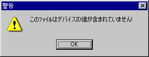
このような警告が出てきましたが、かまわずに進んで問題ありませんでした。
「コマンド」 － 「全てプログラム」 で書き込みを開始します。
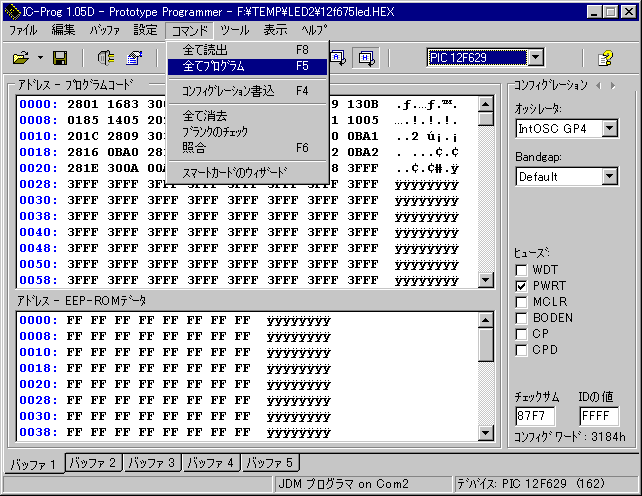
以後、出てくるダイアログを貼り付けておきます。完了まで、およそ30秒くらいです。
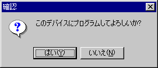
→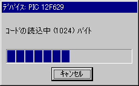
→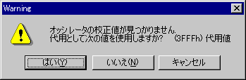
→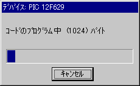
→校正値が見つからない場合 →「はい」を押す
校正値○○○と出る場合 → 「いいえ」を押す
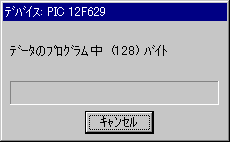
→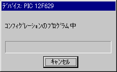
→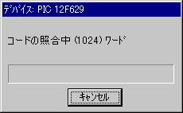
→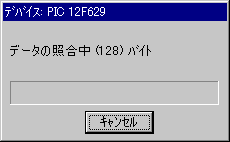
→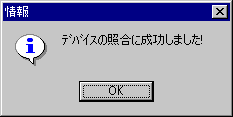
※「オッシレータの校正値」は、購入したばかりの未書込みのPICを読み取って、プログラムアドレス 0x3ffにある値の事です。購入したときにちゃんと読み出しておかないと、「代用値を用いますか？ ＝ YES」で簡単に消去されてしまうようですので、要注意です。
プログラムを書き込んだPICを取り出して、テスト基板に取り付けて動作確認します。
多分、動くはずです...
参考リンク集
マイクロチップ・テクノロジー・ジャパン ... PIC開発元
Microchip Technology Inc USA ...
PIC開発元、ツール類やリファレンスのダウンロードもここから
電子工作の実験室 （後閑氏） ...
PICだけでなく、電子部品や電子回路関連の説明が充実してます
ワンチップマイコン活用工作 ...
上記、電子工作の実験室の中のページ
趣味の電子工作 （井上氏） ...
PIC、電子工作の知識が学べます。PIC命令のリファレンスもここで入手可能
FENG3氏のホームページ ... JDM,
RCDプログラマに関する情報など
500円で始めるPIC
... 私がRCDライタを作ろうと思った、キッカケのサイトです （ありがとうございます）
電子工作のコーナー （ROC氏） ...
IC-Prog日本語化パッチ開発者（2010年現在リンク切れ）
IT技術演習 （信州大学
大学院） ... 本当に、大学院の内容ですか。でも、次の解説のビデオは初心者には役立ちます
周辺拡張オプションキットの製作 ...
最近の院生は... 動画で半田作業の解説
PIC を使った、LED
点灯回路の実験 （朝日大学） ... PIC12F629の基本情報も掲載されています
PICと温度計モジュール ...
RS232C経由でパソコンに温度情報を取り込む方法